배우기 전에 먼저 해 보세요. 틀려도 괜찮아요.
Komm her.와 Komm doch mal her. 가운데 어느 쪽이 더 부드럽게 들릴까요?
doch와 mal은 시키는 말을 권하는 말로 바꿔 줘요.
Ich möchte die Prüfung bestehen. … lerne ich jeden Tag. 빈칸에 알맞은 말은 무엇일까요?
바로 뒤에 동사가 오니까 deshalb예요.
B1.2 Perspektiven · Lektion 8
돌아보기와 다음 목표
음성은 준비 중이에요. 듣기 단추와 받아쓰기는 음성이 올라오면 쓸 수 있어요. 그동안은 글을 읽으면서 공부해요.
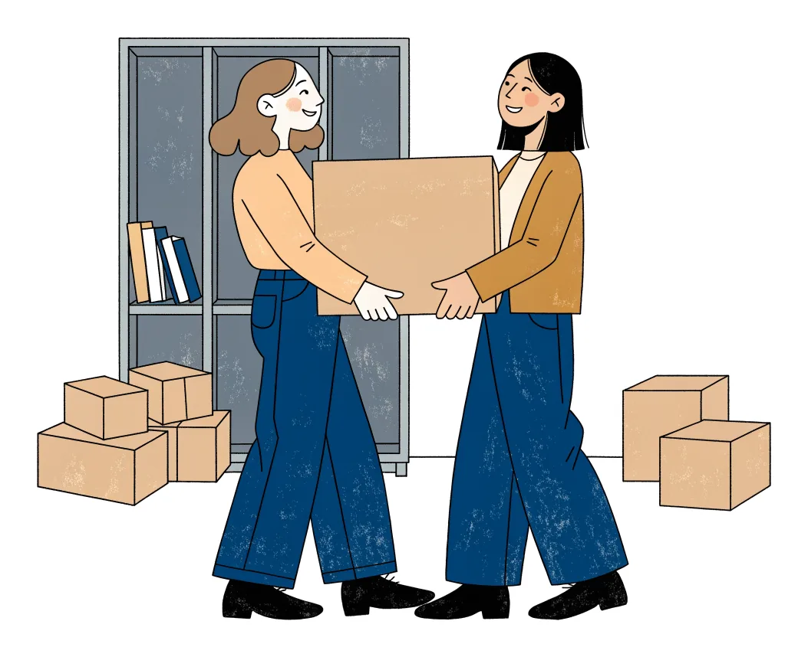
한 단계를 마칠 때는 지나온 길을 돌아보고 다음 목표를 정해요. 목표를 말하려면 까닭, 조건, 목적을 문장으로 이어야 해요. 이 과에서는 지금까지 배운 잇는 말(Konnektoren)을 한자리에 모아 정리해요. 그리고 doch, mal, ja, eigentlich 같은 작은 말로 말을 부드럽고 친근하게 만드는 법을 배워요.
문법 Konnektoren im Überblick, Modalpartikeln (doch, ja, mal, eigentlich)
과제대학대학 지원 동기를 말하고 B2 학습 계획 세우기
과제직장경력 목표를 말하고 B2 학습 계획 세우기
이 과를 마치면 목표와 계획을 까닭과 함께 말하고, 지나온 길을 돌아보고, 부드럽게 권하고 물을 수 있어요.
이 과에서 쓸 말이에요.
배우기 전에 먼저 해 보세요. 틀려도 괜찮아요.
Komm her.와 Komm doch mal her. 가운데 어느 쪽이 더 부드럽게 들릴까요?
doch와 mal은 시키는 말을 권하는 말로 바꿔 줘요.
Ich möchte die Prüfung bestehen. … lerne ich jeden Tag. 빈칸에 알맞은 말은 무엇일까요?
바로 뒤에 동사가 오니까 deshalb예요.
Lektion 7의 낱말 다섯 개를 다시 떠올려 보세요.
2028년 8월 넷째 주, WG예요. Lena는 라이프치히 대학교의 석사 과정에 합격했고, 토요일에 이사해요. Jiu가 짐 싸는 것을 도와요.
들으면서 찾아보세요. Jiu는 내년 봄에 무엇을 하려고 하나요?
8월 말, Frau Hoffmann의 사무실이에요. 한 해에 한 번 하는 면담(Mitarbeitergespräch)이에요. Dohyun은 이 회사에 온 지 거의 3년이 됐어요.
들으면서 찾아보세요. Dohyun은 1월부터 무엇을 맡게 되나요?
8월의 마지막 목요일, Sprachcafé가 끝난 뒤예요. Frau Becker와 Sora가 의자를 정리해요. 두 사람이 알고 지낸 지 2년 반이 됐어요.
들으면서 찾아보세요. Frau Becker는 무엇을 배우고 싶어 하나요?
세 대화를 듣고 답하세요.
Lena는 언제 이사하나요?
Jiu möchte nach dem Master bei Datenwerk bleiben, falls sie dort eine Stelle bekommt.
Jiu는 내년 봄에 무엇을 하려고 하나요?
Dohyun은 처음에 어떤 말로 일했나요?
Dohyun übernimmt ab Januar die Projektleitung für Hamburg.
회사는 Dohyun을 위해 무엇을 하나요?
Frau Becker und Sora siezen sich weiter.
Frau Becker가 du로 말하자고 했어요.
Frau Becker는 무엇을 배우고 싶어 하나요?
낱말 52개예요. 명사는 der, die, das를 색으로 구분했어요.
die Herausforderung, die Herausforderungen 도전, 힘든 과제
Die neue Aufgabe ist eine Herausforderung.새 업무는 도전이에요.
der Vorsatz, die Vorsätze 다짐
Mein Vorsatz für dieses Jahr: mehr lesen.올해 제 다짐은 책을 더 읽는 거예요.
das Vorhaben, die Vorhaben 하려는 일
Was ist dein nächstes Vorhaben?다음에 하려는 일이 뭐예요?
anstreben (hat angestrebt) 목표로 삼다
Sie strebt eine Stelle im Ausland an.그 사람은 외국의 일자리를 목표로 삼아요.
verwirklichen (hat verwirklicht) 이루다, 실현하다
Er hat seinen Traum verwirklicht.그 사람은 꿈을 이뤘어요.
umsetzen (hat umgesetzt) 실행에 옮기다
Wir setzen den Plan im Januar um.우리는 그 계획을 1월에 실행해요.
gelingen (ist gelungen) 잘되다
Die Präsentation ist mir gut gelungen.발표가 잘됐어요.
scheitern (ist gescheitert) 실패하다
Der erste Versuch ist gescheitert.첫 시도는 실패했어요.
durchhalten (du hältst durch, hat durchgehalten) 끝까지 버티다
Halte durch, bald ist es geschafft!끝까지 버텨요. 곧 끝나요!
die Ausdauer 끈기
Für eine Sprache braucht man Ausdauer.말을 배우려면 끈기가 있어야 해요.
der Mut 용기
Für einen Umzug braucht man Mut.이사하려면 용기가 있어야 해요.
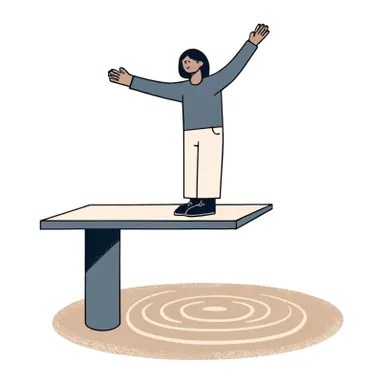
mutig 용감한
Das war eine mutige Entscheidung.그건 용감한 결정이었어요.
der Ehrgeiz 해내려는 마음, 야심
Sie hat viel Ehrgeiz.그 사람은 해내려는 마음이 커요.
ehrgeizig 야심 찬
Das ist ein ehrgeiziges Ziel.그건 야심 찬 목표예요.
kurzfristig 가까운 앞날의
Kurzfristig möchte ich die Prüfung bestehen.가깝게는 시험에 붙고 싶어요.
langfristig 먼 앞날의
Langfristig möchte ich ein Team leiten.길게 보면 팀을 이끌고 싶어요.
die Priorität, die Prioritäten 먼저 할 일
Die Prüfung hat jetzt Priorität.지금은 시험이 먼저예요.
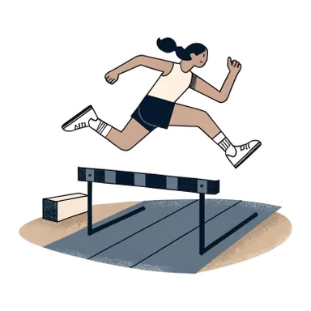
das Hindernis, die Hindernisse 걸림돌
Die Sprache ist kein Hindernis mehr.말은 이제 걸림돌이 아니에요.
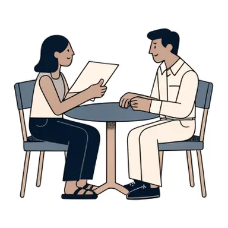
das Mitarbeitergespräch, die Mitarbeitergespräche 상사와 하는 면담
Das Mitarbeitergespräch findet einmal im Jahr statt.면담은 한 해에 한 번 해요.
die Beförderung, die Beförderungen 승진
Herzlichen Glückwunsch zur Beförderung!승진을 축하해요!
befördern (hat befördert) 승진시키다
Sie wurde zur Teamleiterin befördert.그 사람은 팀장으로 승진했어요.
die Gehaltserhöhung, die Gehaltserhöhungen 급여 인상
Er hat um eine Gehaltserhöhung gebeten.그 사람은 급여를 올려 달라고 했어요.
die Leitung 이끄는 일, 책임자 자리
Sie übernimmt die Leitung der Abteilung.그 사람이 부서를 맡아요.
die Projektleitung 프로젝트를 이끄는 일
Ab Januar hat er die Projektleitung.1월부터 그 사람이 프로젝트를 이끌어요.
die Leistung, die Leistungen 해낸 일, 성과
Das ist eine starke Leistung.대단한 성과예요.
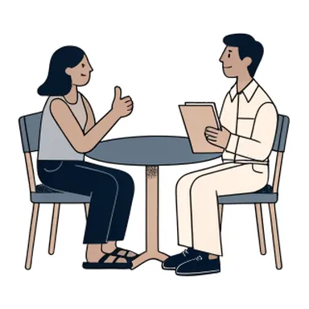
das Lob 칭찬
Über das Lob habe ich mich gefreut.칭찬을 듣고 기뻤어요.
die Bilanz, die Bilanzen 돌아보고 따진 결과
Nach einem Jahr ziehen wir Bilanz.한 해가 지나면 돌아보고 따져 봐요.
der Rückblick, die Rückblicke 돌아보기
Im Rückblick war das Jahr gut.돌아보면 좋은 한 해였어요.
zurückblicken (hat zurückgeblickt) 돌아보다
Wir blicken auf drei Jahre zurück.우리는 지난 3년을 돌아봐요.
erfolgreich 잘된, 성공한
Das Projekt war erfolgreich.그 프로젝트는 잘됐어요.
beruflich 일과 관련된
Was sind Ihre beruflichen Ziele?일에서 이루고 싶은 목표가 뭐예요?
persönlich 개인의
Das ist mein persönliches Ziel.그건 제 개인 목표예요.
die Perspektive, die Perspektiven 앞날의 가능성
Die Stelle hat gute Perspektiven.그 자리는 앞날이 밝아요.
sich weiterentwickeln (hat sich weiterentwickelt) 더 발전하다
Ich möchte mich beruflich weiterentwickeln.저는 일에서 더 발전하고 싶어요.
die Fachkraft, die Fachkräfte 전문 인력
Viele Firmen suchen Fachkräfte.전문 인력을 찾는 회사가 많아요.
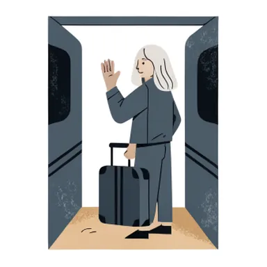
sich verabschieden (hat sich verabschiedet) 작별 인사를 하다
Wir haben uns am Bahnhof verabschiedet.우리는 역에서 작별 인사를 했어요.
der Neuanfang, die Neuanfänge 새 출발
Der Umzug ist ein Neuanfang.이사는 새 출발이에요.
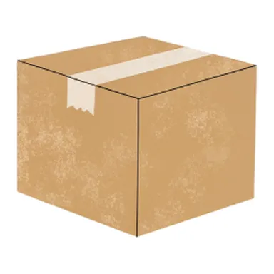
der Karton, die Kartons 종이 상자
Die Bücher sind im Karton.책은 상자에 들어 있어요.
einpacken (hat eingepackt) 싸다, 넣다
Hast du alles eingepackt?다 쌌어요?
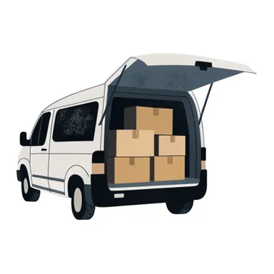
der Transporter, die Transporter 짐차
Der Transporter kommt am Samstag.짐차는 토요일에 와요.
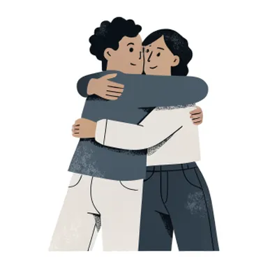
umarmen (hat umarmt) 껴안다
Zum Abschied umarmen wir uns.헤어질 때 우리는 서로 안아요.
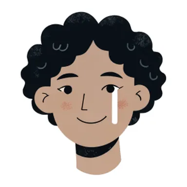
die Träne, die Tränen 눈물
Beim Abschied kamen mir die Tränen.헤어질 때 눈물이 났어요.
das Versprechen, die Versprechen 약속
Ich halte mein Versprechen.저는 약속을 지켜요.
die Hoffnung, die Hoffnungen 희망
Ich habe die Hoffnung nicht aufgegeben.저는 희망을 버리지 않았어요.
der Zweifel, die Zweifel 자신 없는 마음, 의심
Am Anfang hatte ich Zweifel.처음에는 자신이 없었어요.
überzeugt 굳게 믿는
Ich bin überzeugt, dass du es schaffst.당신이 해낼 거라고 굳게 믿어요.
bisher 지금까지
Bisher ist alles gut gegangen.지금까지는 다 잘됐어요.
mittlerweile 이제는, 그사이에
Mittlerweile verstehe ich fast alles.이제는 거의 다 알아들어요.
endlich 드디어
Endlich habe ich die Zusage bekommen.드디어 합격 통지를 받았어요.
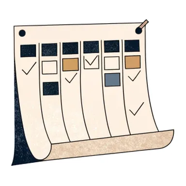
der Lernplan, die Lernpläne 학습 계획
Ich habe einen Lernplan für B2 gemacht.B2 학습 계획을 세웠어요.
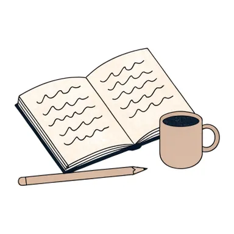
das Lerntagebuch, die Lerntagebücher 학습 일기
Ich schreibe jeden Abend ins Lerntagebuch.저는 저녁마다 학습 일기를 써요.
die Routine, die Routinen 몸에 밴 습관
Lernen ist für mich eine Routine geworden.공부는 제게 습관이 됐어요.
이 과의 낱말로 여덟 문제를 풀어요.
뜻이 가까운 말끼리 모았어요. 동사의 자리를 눈여겨보세요.
작은 말은 힘을 주지 않고 가볍게 말해요.
규칙
문장을 잇는 말은 뒤에 오는 문장의 짜임에 따라 세 무리로 나뉘어요. 첫째, weil, obwohl, dass, wenn 같은 말 뒤에서는 동사가 문장 끝으로 가요. 둘째, deshalb, trotzdem, außerdem, dann 같은 말은 문장의 첫 자리를 차지해서 바로 뒤에 동사가 와요. 셋째, und, aber, oder, denn, sondern은 자리를 차지하지 않아서 뒤의 순서가 그대로예요.
| 무리 | 잇는 말 | 동사의 자리 |
|---|---|---|
| 첫째 | weil, obwohl, dass, wenn, falls, damit, sodass | 문장 끝 |
| 둘째 | deshalb, trotzdem, außerdem, dann, danach, sonst | 잇는 말 바로 뒤 |
| 셋째 | und, aber, oder, denn, sondern | 그대로 둘째 자리 |
주의 같은 뜻을 세 가지로 말할 수 있으니 글에서는 섞어 쓰세요. 문장이 단조롭지 않아요. 글에서는 weil 대신 da도 써요. Da ich noch viele Wörter lernen muss, lese ich jeden Tag. da 문장은 대개 앞에 와요.
규칙을 보고 바로 확인해 보세요.
Ich bin müde. … gehe ich früh ins Bett. 빈칸에 알맞은 말은 무엇인가요?
규칙
이번에는 뜻으로 나눠 봐요. 까닭과 결과는 weil, denn, deshalb, sodass로 말해요. 뜻밖의 일은 obwohl, trotzdem으로, 목적은 damit, um … zu로, 조건은 wenn, falls로 말해요. 때를 말할 때는 als, wenn, nachdem, bevor, während, seitdem을 써요. 말하려는 뜻을 먼저 정하고, 그다음에 동사의 자리를 맞추세요.
| 뜻 | 동사가 끝에 | 동사가 바로 뒤에 |
|---|---|---|
| 까닭과 결과 | weil, da, sodass | deshalb |
| 뜻밖의 일 | obwohl | trotzdem |
| 목적 | damit, um … zu | – |
| 조건 | wenn, falls | sonst |
| 때 | als, nachdem, bevor, während, seitdem | dann, danach |
주의 헷갈리기 쉬운 짝을 다시 보세요. 지난 일 한 번은 als, 되풀이된 일과 앞날의 일은 wenn이에요. 목적은 damit, 결과는 sodass예요. 주어가 같으면 damit 대신 um … zu를 써요. Ich lerne, um die Prüfung zu bestehen.
규칙을 보고 바로 확인해 보세요.
Ich hatte Angst. … habe ich nicht aufgegeben. 빈칸에 알맞은 말은 무엇인가요?
규칙
doch, mal, ja, eigentlich 같은 작은 말을 Modalpartikel이라고 해요. 문장의 뜻은 그대로 두고 말하는 사람의 느낌을 더해요. 명령문에 doch나 mal을 넣으면 시키는 말이 권하는 말로 부드러워져요. mal은 '한번, 좀'의 느낌이고, doch는 '그러지 그래요'의 느낌이에요. 둘을 함께 doch mal이라고도 해요. 동사와 대명사 뒤에 와요.
| 딱딱한 말 | 부드러운 말 |
|---|---|
| Komm her. | Komm doch mal her. |
| Setzen Sie sich. | Setzen Sie sich doch. |
| Sag es. | Sag es mal. |
| Besuch mich. | Besuch mich doch mal. |
주의 doch에는 다른 쓰임이 두 가지 더 있어요. Du bist doch die Mutigste von uns.처럼 평서문에 넣으면 '~잖아요' 하고 상대가 잊고 있는 것을 일깨워요. Kommst du nicht mit? – Doch!처럼 nicht가 든 물음에 '아니요, 가요'라고 답할 때는 힘을 줘서 말해요.
규칙을 보고 바로 확인해 보세요.
어느 말이 가장 부드럽게 들리나요?
규칙
평서문의 ja는 '알다시피, ~잖아요'의 느낌이에요. 두 사람이 다 아는 일을 말할 때 넣어요. 놀랐을 때도 써요. Das ist ja schön! 물음에 넣는 eigentlich는 '그런데, 그건 그렇고'의 느낌이에요. 문득 궁금해진 것을 묻거나 이야기를 새로 꺼낼 때 써요. 물음이 덜 딱딱하게 들려요.
| 작은 말 | 느낌 | 보기 |
|---|---|---|
| ja | 서로 아는 일 | Du weißt ja, dass ich umziehe. |
| ja | 놀람 | Das ist ja schön! |
| eigentlich | 문득 궁금함 | Wie alt bist du eigentlich? |
| doch | 일깨움 | Du kennst ihn doch. |
주의 이 작은 말들은 글보다 말에 훨씬 많이 나와요. 몰라도 뜻은 통하지만, 넣으면 자연스럽고 친근하게 들려요. 지원서나 보고서 같은 공식적인 글에는 쓰지 않아요. eigentlich는 평서문에서 '사실은'이라는 뜻으로도 써요. Eigentlich wollte ich früher kommen.
규칙을 보고 바로 확인해 보세요.
Wie alt bist du …? 빈칸에 넣으면 물음이 가볍고 친근해지는 말은 무엇인가요?
듣고 알맞은 것을 고르세요.
Lena의 말은 어떻게 들리나요?
Jiu, komm doch mal her.
Frau Hoffmann은 이 사실을 어떻게 말하나요?
Sie sind ja jetzt fast drei Jahre bei uns.
Dohyun은 지금 어떻게 일하나요?
Mittlerweile führe ich die Kundengespräche auf Deutsch, obwohl mir manchmal noch Wörter fehlen.
Jiu는 왜 학습 계획을 세웠나요?
Ich habe mir einen Lernplan gemacht, damit ich durchhalte.
어학원의 상담이에요. 듣고 답하세요.
Beratung in der Sprachschule
Herr Costa Guten Tag. Ich habe im Juni die B1-Prüfung bestanden und möchte jetzt weiterlernen. Was würden Sie mir empfehlen?
Beraterin Dann passt unser B2-Kurs am Abend. Er findet montags und mittwochs von halb sieben bis Viertel vor neun statt.
Herr Costa Wie lange dauert der Kurs eigentlich?
Beraterin Sechzehn Wochen. Er beginnt am elften September. Sie können ja vorher eine Probestunde besuchen.
Herr Costa Das mache ich gern. Und was kostet der Kurs?
Beraterin Sechshundertvierzig Euro. Falls Ihr Arbeitgeber die Kosten übernimmt, schreiben wir eine Rechnung für die Firma.
Herr Costa Gut. Kann ich danach gleich die Prüfung machen?
Beraterin Die meisten brauchen zwei Kurse, bevor sie die B2-Prüfung machen. Kommen Sie doch erst einmal zur Probestunde.
Wann findet der Kurs statt?
Wie lange dauert der Kurs?
Herr Costa kann vor dem Kurs eine Probestunde besuchen.
Was kostet der Kurs?
Nach einem Kurs machen die meisten sofort die B2-Prüfung.
대부분은 강좌를 두 번 듣고 시험을 본다고 했어요.
Jiu가 세운 한 주의 학습 계획이에요. 읽고 답하세요.
Mein Wochenplan für B2
| Tag | Was ich mache |
|---|---|
| Montag | 20 Minuten Wortschatz in der Bahn |
| Dienstag | Tandem mit Felix: eine Stunde sprechen |
| Mittwoch | einen Zeitungsartikel lesen, fünf Wörter notieren |
| Donnerstag | Sprachkurs an der Uni von 18 bis 19.30 Uhr |
| Freitag | frei |
| Samstag | einen Text schreiben und korrigieren lassen |
| Sonntag | eine Folge einer deutschen Serie sehen, Lerntagebuch schreiben |
Was macht Jiu am Montag?
Am Dienstag spricht Jiu eine Stunde mit Felix.
Wann besucht Jiu den Sprachkurs?
Jiu lernt an jedem Tag der Woche.
금요일은 쉬어요.
Was macht Jiu am Sonntag?
동사의 자리를 보고 알맞은 말을 고르세요.
Ich bin müde. gehe ich früh ins Bett.
피곤해요. 그래서 일찍 자러 가요.
바로 뒤에 동사가 오면 deshalb예요.
Ich gehe früh ins Bett, ich müde bin.
피곤해서 일찍 자러 가요.
동사가 끝에 있으면 weil이에요.
Ich gehe früh ins Bett, ich bin müde.
일찍 자러 가요. 피곤하니까요.
denn 뒤는 순서가 그대로예요.
Es regnet. gehen wir spazieren.
비가 와요. 그래도 우리는 산책해요.
es regnet, gehen wir spazieren.
비가 오는데도 우리는 산책해요.
Ich lerne viel, ich die Prüfung bestehe.
시험에 붙으려고 공부를 많이 해요.
뜻을 보고 알맞은 말을 고르세요.
ich nach Deutschland kam, konnte ich kaum Deutsch.
독일에 왔을 때 저는 독일어를 거의 못 했어요.
지난 일 한 번은 als예요.
Ich mache einen Lernplan, nicht aufzugeben.
그만두지 않으려고 학습 계획을 세워요.
뒤에 zu가 있으면 um이에요.
Ruf mich an, du Hilfe brauchst.
혹시 도움이 필요하면 전화해요.
Sie hat viel geübt, sie jetzt fließend spricht.
그 사람은 연습을 많이 해서 이제 막힘없이 말해요.
ich die Prüfung bestanden hatte, habe ich gefeiert.
시험에 붙은 뒤에 축하했어요.
Ich lerne Deutsch, ich in Frankfurt wohne.
프랑크푸르트에 산 뒤로 독일어를 배워요.
알맞은 작은 말을 고르세요.
Komm mal her.
이리 좀 와 봐요.
Was machst du am Wochenende?
그런데 주말에 뭐 해요?
Du weißt , dass ich nächste Woche umziehe.
제가 다음 주에 이사하는 거 알잖아요.
Sag , hast du morgen Zeit?
저기, 내일 시간 있어요?
Das ist toll!
그거 정말 멋지네요!
Setzen Sie sich .
앉으세요.
작은 말과 그 느낌을 짝지으세요.
낱말을 순서대로 눌러 문장을 만드세요.
이리 좀 와 봐요.
그런데 토요일에 뭐 해요?
시험에 붙으려고 공부해요.
그래서 날마다 연습해요.
피곤한데도 계속 공부해요.
뜻이 반대인 말을 짝지으세요.
빈칸에 알맞은 낱말을 쓰세요.
Im Januar übernimmt er die .
1월에 그 사람이 프로젝트를 맡아요.
Für eine Sprache braucht man .
말을 배우려면 끈기가 있어야 해요.
Wir haben uns am Bahnhof .
우리는 역에서 작별 인사를 했어요.
Mit der neuen Aufgabe bekommt sie eine .
새 업무와 함께 그 사람은 급여가 올라요.
듣고 그대로 써 보세요.
음성 준비 중Komm doch mal her. 이리 좀 와 봐요.
음성 준비 중Was sind eigentlich Ihre Ziele? 그런데 목표가 뭔가요?
음성 준비 중Trotzdem habe ich nicht aufgegeben. 그래도 그만두지 않았어요.
Mein Ziel ist es, in einem Jahr B2 zu erreichen. 제 목표는 1년 안에 B2에 이르는 거예요.
Kurzfristig möchte ich die Prüfung bestehen. 가깝게는 시험에 붙고 싶어요.
Langfristig würde ich gern ein Projekt leiten. 길게 보면 프로젝트를 이끌어 보고 싶어요.
Ich habe mir vorgenommen, jeden Tag zu lernen. 날마다 공부하기로 마음먹었어요.
Ich interessiere mich für dieses Fach, weil es zu meinen Zielen passt. 제 목표와 맞아서 이 분야에 관심이 있어요.
Besonders wichtig ist mir, dass ich viel Praxis bekomme. 실무를 많이 익히는 것이 제게 특히 중요해요.
Dieser Studiengang passt zu mir, denn er verbindet Technik und Sprache. 이 과정은 기술과 언어를 잇기 때문에 저와 맞아요.
Ich bin überzeugt, dass ich hier viel lernen kann. 여기서 많이 배울 수 있다고 굳게 믿어요.
Am Anfang konnte ich kaum Deutsch. 처음에는 독일어를 거의 못 했어요.
Mittlerweile führe ich Gespräche auf Deutsch. 이제는 독일어로 상담해요.
Das ist mir gut gelungen. 그 일은 잘됐어요.
Daraus habe ich viel gelernt. 거기서 많이 배웠어요.
Ich lerne dreimal pro Woche eine halbe Stunde. 일주일에 세 번 30분씩 공부해요.
Damit ich durchhalte, schreibe ich ein Lerntagebuch. 끝까지 해내려고 학습 일기를 써요.
Falls ich wenig Zeit habe, wiederhole ich nur den Wortschatz. 혹시 시간이 모자라면 낱말만 되풀이해요.
Nach drei Monaten ziehe ich Bilanz. 석 달 뒤에 돌아보고 따져 봐요.
Komm doch mal vorbei. 한번 들러요.
Sag mal, hast du kurz Zeit? 저기, 잠깐 시간 있어요?
Was hast du eigentlich vor? 그런데 뭐 할 계획이에요?
Du weißt ja, wie das ist. 어떤지 알잖아요.
과제 고르기
역할 대화와 말하기, 쓰기 과제는 대학 생활과 직장 생활 두 가지예요. 하나를 고르면 다음 과에서도 그쪽 과제가 나와요. 언제든 바꿀 수 있어요.
대화 A에서 역할을 하나 고르세요. 상대의 말은 글로 읽고, 내 차례에는 직접 말해요.
대화 B에서 역할을 하나 고르세요. 상대의 말은 글로 읽고, 내 차례에는 직접 말해요.
내 목표를 떠올리고 칸을 채우세요. 완성된 문장을 소리 내어 읽어 보세요.
Mein Ziel ist es, die B2-Prüfung zu bestehen.
Das ist mir wichtig, weil ich in Deutschland arbeiten möchte.
Deshalb lerne ich jeden Tag zwanzig Minuten.
Ich schreibe ein Lerntagebuch, damit ich durchhalte.
나는 독일 대학교의 석사 과정(Informatik)에 지원해요. 면접에서 왜 이 과정을 골랐는지, 졸업한 뒤에 무엇을 하고 싶은지 말해야 해요. 나는 서울에서 컴퓨터 공학을 공부했고, 소프트웨어 회사에서 실습을 했어요. 이 과정에는 데이터 분석 수업이 많아서 골랐어요. 졸업한 뒤에는 독일에서 소프트웨어 개발 일을 하고 싶어요.
수업은 독일어로 해요. 그래서 1년 안에 B2에 이르려고 해요. 계획은 이래요. 일주일에 두 번 어학 강좌에 가고, 날마다 20분씩 공부하고, 토요일마다 Tandem 친구와 이야기해요.
면접에서 교수가 물어요. 쪽지를 보고 답하세요. 질문을 듣고 소리 내어 답한 뒤 예시 답과 비교해 보세요.
Warum möchten Sie bei uns studieren? 왜 우리 대학교에서 공부하고 싶으세요?
Weil es in diesem Studiengang viele Kurse zur Datenanalyse gibt. Das interessiert mich besonders.
Was haben Sie bisher gemacht? 지금까지 무엇을 하셨나요?
Ich habe in Seoul Informatik studiert. Danach habe ich ein Praktikum in einer Softwarefirma gemacht.
Was sind Ihre Ziele nach dem Studium? 졸업한 뒤의 목표는 무엇인가요?
Langfristig möchte ich in Deutschland in der Softwareentwicklung arbeiten.
Unsere Kurse sind auf Deutsch. Wie bereiten Sie sich vor? 우리 수업은 독일어로 합니다. 어떻게 준비하시나요?
Ich möchte in einem Jahr B2 erreichen. Deshalb besuche ich zweimal pro Woche einen Sprachkurs.
Und was machen Sie, falls das Lernen schwierig wird? 혹시 공부가 힘들어지면 어떻게 하실 건가요?
Ich lerne jeden Tag zwanzig Minuten, damit ich durchhalte. Außerdem spreche ich jeden Samstag mit einem Tandempartner.
Mein Motivationsschreiben
석사 과정에 지원하는 동기를 쓰고 B2 학습 계획을 덧붙여 보세요. 여덟 문장쯤 써요.
Sehr geehrte Damen und Herren, hiermit bewerbe ich mich um einen Studienplatz im Master Informatik. Ich habe in Seoul Informatik studiert und danach ein Praktikum in einer Softwarefirma gemacht. Ihr Studiengang interessiert mich besonders, weil es viele Kurse zur Datenanalyse gibt. Langfristig möchte ich in Deutschland in der Softwareentwicklung arbeiten. Mein Deutsch ist mittlerweile auf dem Niveau B1. Damit ich den Kursen gut folgen kann, möchte ich in einem Jahr B2 erreichen. Deshalb besuche ich zweimal pro Woche einen Sprachkurs und lerne jeden Tag zwanzig Minuten. Über eine Einladung zu einem Gespräch würde ich mich sehr freuen. Mit freundlichen Grüßen, Minji Choi
다 쓴 뒤에 확인해 보세요.
한 해에 한 번 하는 면담이 다가와요. 팀장에게 올해 잘한 일과 앞으로의 목표를 말해야 해요. 올해 나는 새 고객 세 곳을 맡았고, 처음으로 독일어로 발표했어요. 회의에서 의견을 너무 늦게 말하는 것이 어려운 점이었어요. 가깝게는 새 고객 두 곳을 더 맡고 싶고, 길게 보면 작은 프로젝트를 이끌어 보고 싶어요.
그러려면 협상에 쓸 독일어가 더 필요해요. 그래서 여름까지 B2에 이르려고 해요. 계획은 이래요. 일주일에 두 번 저녁 강좌에 가고, 날마다 20분씩 낱말을 되풀이해요.
팀장이 물어요. 쪽지를 보고 답하세요. 질문을 듣고 소리 내어 답한 뒤 예시 답과 비교해 보세요.
Setzen Sie sich doch. Was ist Ihnen in diesem Jahr gut gelungen? 앉으세요. 올해 어떤 일이 잘됐나요?
Ich habe drei neue Kunden übernommen. Außerdem habe ich zum ersten Mal auf Deutsch präsentiert.
Und was war schwierig? 어려웠던 일은요?
Die Besprechungen. Obwohl ich vieles verstehe, sage ich meine Meinung oft zu spät.
Was sind eigentlich Ihre Ziele für das nächste Jahr? 그런데 내년 목표는 뭔가요?
Kurzfristig möchte ich noch zwei neue Kunden übernehmen. Langfristig würde ich gern ein kleines Projekt leiten.
Was brauchen Sie dafür? 그러려면 무엇이 필요한가요?
Besseres Deutsch für Verhandlungen. Deshalb möchte ich bis zum Sommer B2 erreichen.
Wie wollen Sie das schaffen? 어떻게 해내실 건가요?
Ich besuche zweimal pro Woche einen Abendkurs. Außerdem wiederhole ich jeden Tag zwanzig Minuten Wortschatz, damit ich durchhalte.
Meine Ziele für das nächste Jahr
면담 전에 팀장에게 보낼 글을 써 보세요. 올해 한 일, 목표, B2 학습 계획을 여덟 문장쯤으로 써요.
Sehr geehrte Frau Hoffmann, vor unserem Gespräch möchte ich Ihnen kurz meine Ziele schreiben. In diesem Jahr habe ich drei neue Kunden übernommen und zum ersten Mal auf Deutsch präsentiert. Schwierig waren für mich die Besprechungen, weil ich meine Meinung oft zu spät sage. Kurzfristig möchte ich noch zwei neue Kunden übernehmen. Langfristig würde ich gern ein kleines Projekt leiten. Dafür brauche ich besseres Deutsch für Verhandlungen. Deshalb möchte ich bis zum Sommer das Niveau B2 erreichen. Ich besuche zweimal pro Woche einen Abendkurs, damit ich regelmäßig lerne. Mit freundlichen Grüßen, Minji Choi
다 쓴 뒤에 확인해 보세요.
Ich kann meine Ziele und Pläne begründen.내 목표와 계획을 까닭과 함께 말할 수 있어요.
Ich kann auf meinen Weg zurückblicken und sagen, was mir gelungen ist.걸어온 길을 돌아보고 잘된 일을 말할 수 있어요.
Ich kann Sätze mit passenden Konnektoren verbinden.알맞은 말로 문장을 이을 수 있어요.
Ich kann mit doch, mal, ja und eigentlich freundlicher sprechen.doch, mal, ja, eigentlich로 더 친근하게 말할 수 있어요.